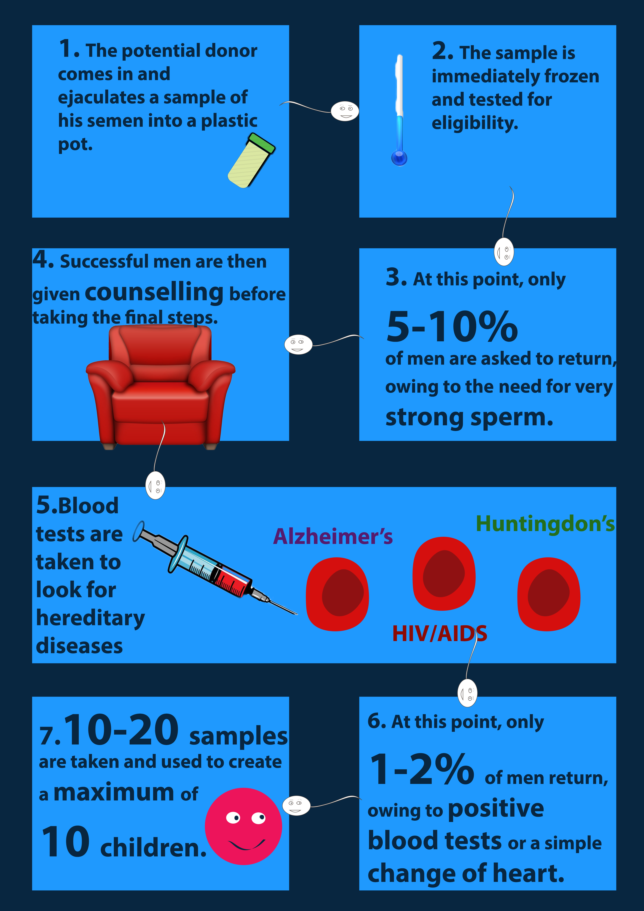

Sperm donation: an industry in need of change
By Jonathan Pickles

You are taken into a small room, about 3x3, and given a plastic pot. The room is cosy, with a reclined armchair, a mirror, a wash basin and a small TV hanging from the wall. Below the TV is a set of drawers with two DVDs in it: one titled Stop Moving Violations, the other called Natural Big ‘uns. This is the room where you will ejaculate a sample of your genetic material which will later be used to inseminate another human being.
Until 2005, young men - in particular, students - were able to visit the sperm bank, produce a sample of their semen, allow for that sample to be used to impregnate a woman whom they have never met and then continue with the rest of their lives without ever having to look back. But on April 1st of that year, the law changed so that anybody who donated sperm after that date would not be given the right to anonymity and the child they helped conceive would be able to contact them as soon as they hit the age of 18.
Despite an increase in donors, the industry has still struggled to keep up with the demand. Social change since this date, such as allowing two mothers on a child’s birth certificate in 2009, has created an environment where more people are willing to conceive children through donated sperm. But the lifting of the anonymity cannot take the entire blame for this issue. Head of Andrology at the University of Sheffield, Prof. Allan Pacey, believes that there are several other factors, such as the low payment for semen samples and the negative stigma attached to this type of donation.
"Really, we should just get over that"
He said: “I think we have this notion that women who donate eggs are heroines because they have to undergo a surgical procedure whereas men who donate sperm are ever-so slightly smutty because they have to masturbate and undergo a sexual act. Really, we should just get over that and we should just see the act of donation as something that is really positive to do. We should be prepared to award people of either gender when they are willing to donate.”
Professor Pacey explains donor anonymity and why students are less likely to donate today:One person who is not shy to this subject, owing to her passion for it, is ex-chair of the National Gamete Donation Trust (NGDT), Laura Spoelstra. Called the ‘sperm mum’ by her children’s friends (because at one point when her name and "sperm" was typed into Google she appeared on the first 15 results) Laura took her position as chair shortly after the anonymity of donors was lifted and many board members left.
With a background in advertisement, Laura noticed that there was a problem with the way sperm donation was being sold. Comparing the way car companies advertise their product to the way sperm banks advertise their services, she noticed that the small print in the corner of a car advertisement – usually selling the less appealing part of the product such as the warranty and finance options – was “right smack in the middle” of a sperm donation advertisement.
Laura knew this had to change if they were going to continue getting donors through the door. As a self-described “visionary doer”, she said: “Dare I say, because of my blunt Dutchness and my ability to call a ‘spade’ a spade and say words like ‘masturbation’ without getting a hot flush, we did get a lot of publicity and get the media talking about it.”
“The reason why things happened is because I like to do things bold and slightly brash. I am not your typical civil servant; in fact, I am the nightmare of civil servants.”
Laura explains why donation advertising needed a facelift:When Laura was 20, she made a list of all the things she wanted to do. Little did she know that becoming the chair of the NGDT, ending up on the front page of the Mail on Sunday and appearing on a TV programme with Jodie Marsh would be a part of her future, but she did know that she wanted children.
After giving birth to her twins, she realised how lucky she was: “The universe awarded me with this gift, what can I do to give back? Hence I became an egg donor. These things flushing through my system were surplus to requirement”.
"I am not your typical civil servant; in fact, I am the nightmare of civil servants.” ~ Laura Spoelstra
Although the National Sperm Bank closed down, both Laura and Allan disagree that it was unsuccessful and both advocate a national infrastructure with a national advertising system. The bank, which was based in Birmingham, only created eight donors during its two years of service. A big reason behind this low figure was that not enough men came forward with sperm that was of sufficient quality to donate. However, this scenario was not a stroke of serious unluckiness, as only about 5-10% of men have strong enough sperm cells to survive the donation process
They both believe the bank only needed a little bit more time and funding to become self-sufficient. One donor can generate roughly 20 treatments, costing £450 each. This means that eight donors accumulated roughly £72,000 between them, which was only £5,000 short of the funding the bank received from the Department of Health.
Professor Pacey explains donation statistics at the National Sperm Bank:But this positive view of sperm donation is not universally shared. In fact, one of the industry’s staunchest and most vocal critics is somebody who was donor-conceived herself.
Dr Joanna Rose admittedly “hates the industry”. She believes that they target young men who do not completely understand the psycho-social consequences of what they are doing. She recognises these men as the “genetic father” of the child they helped create rather than just a sperm donor.
Joanna explains why she dislikes the industry:Existential debt
Although she was conceived in this way, she does not feel as though she is obliged to agree with it. Whenever she is asked the question ‘but how can you disagree with donor conception when you are a product of it?’ she refers to what she calls the ‘existential debt’. A term first coined by her friend, Rupert Rushbrooke, meaning that people are made to feel that they cannot complain about the way they were created as they should be grateful for their existence.
She said: “I have never come across a group of people who think they have to say that they’re grateful to be alive as much as donor offspring because we are so confronted with people telling us that kind of thing. You have to be grateful to be alive even though you don’t know half your genetic family; normally that is considered a loss.”
Joanna was eight years old when her parents told her she was donor-conceived, but she said that the reality of her conception did not really sink in until she was in her early 20s. She said: “Ultimately you are raised in a box. You don’t think outside the box because you are not told there is an outside of the box or that you’re even in a box. But you still feel weird. From my perspective I’d ask about things like ‘why do I look like I do?’ and they’d use words like donor conception but nobody would refer to me having a genetic father who was probably tall and probably had features like me. So I’d say ‘why is my skin colour not like my Dad or my brother’s’ and they’d say because you’re more like your auntie.”
"I have never come across a group of people who think they have to say that they’re grateful to be alive as much as donor offspring.” ~ Dr Joanna Rose
Not everybody finds out this information as a child. Rachel Pepa did not find out that her father was not biologically related to her until she was 25 years old and six months pregnant with her own son.
She first became suspicious at the age of 20 when her Dad was diagnosed with kidney failure. When her father was taken into the hospital, the doctor took Rachel aside and told her that as his daughter she had a 50% chance of having the gene which caused her father to have this illness. Although Rachel saw this equal chance as “high and scary”, her parents were “surprisingly casual” about it and kept reassuring her that she was going to be fine. This was when alarm bells began to ring.
Five years after receiving this news about her father, Rachel was six months pregnant and had just had her blood type checked on a routine examination. She was shocked to discover she had the rare blood type, AB, and she was pretty sure that her Dad was O.
"Of course he's your Dad, don't be so stupid"
She confronted her Mum for the first time on the sofa whilst they were watching the TV. She asked if her Dad was her biological father and her Mum, eyes still fixed on the television, replied: “of course he’s your Dad, don’t be so stupid”.
Dissatisfied with this answer, Rachel decided to do some snooping. She waited until they had gone away for the weekend and when she came round to check the house and water the plants she searched for her father’s medical documents. When she found them, her curiosity was quenched and the answer was revealed to be true: her Dad was blood-type O.
She decided to confront her mother again, this time over lunch with a photocopy of her Dad’s medical documents displaying his blood type. She put the documents down in front of her Mum and said: “that is proof that my Dad is not my biological father, so will you please tell me what is going on?”. It was only then that her Mum came clean.
After it was revealed that Rachel’s father had kidney failure, him and her mother argued over telling Rachel the truth; but her Dad believed that she would not want anything to do with him anymore and convinced her Mum not to say anything.
After having fertility problems, Rachel’s parents agreed to conceive her through donated sperm. But despite having a child through this method, they told nobody. They kept it from their friends, their family and, until 25 years later, Rachel; they were the only people to know. The doctors advised them against telling Rachel about her biological identity and that was what they intended to do for the rest of their lives.
Rachel met her half-brother through the Donor Conceived Register; a database where people who were donor-conceived before records were kept in 1991 can store their DNA and match with others. She had always wondered where she got her curly brown hair and green eyes from and when she met her brother her question was answered.
Rachel eventually broke her silence, two years after finding out the truth about her relationship with her father, and told him what she knew. She had been offered to take part in a radio interview about donor offspring and believed her father deserved to find out from her rather than hear it on air or from somebody else who had listened to the show.
She told him “I just wanted you to know that I know, I have known for a while and it hasn’t changed the way I feel about you - you're my dad and I love you, but I'm curious about my donor and I'm looking for him”, but he just wanted to discontinue the conversation. They never spoke about it again, right up until the day he passed away.
Like Joanna, Rachel thinks that the lifting of anonymity is too little too late. They both agree that the UK should adopt a similar system to one that has been implemented in Victoria, Australia.
Narelle's law
One of Joanna’s best friends, Narelle Grech, like her was a donor offspring who was very pro-active in her search for the man who helped conceive her. For years, Narelle was convinced she had IBS; but one day she visited the hospital and the doctors told her that the irritable bowels she had was stage four cancer.
It was at this point that she knew she did not have long left to find her biological father. After a hard search and the intervention of Victoria’s premier at the time, Ted Baillieu, Narelle finally met him. They bonded really well; but after only a few weeks of knowing each other, the cancer took her life. She was 31 years old.
Since then, the province of Victoria introduced an unprecedented law, colloquially known as Narelle’s Law, which allows people who were donor-conceived before the anonymity was lifted to access information about their biological parent. The law was put into practice on 1st March this year.
There has been no indication of a law similar to this one being passed in the UK anytime soon, the subject is not even a talking point in parliament. But, although it is uncommon, people who donated their genetic material before 2005 can change their status so that they are no longer anonymous. This is what Laura has done. She said: “If they want to be part of my life and my children’s then that’s fine with me.”
Timeline of events since creation of the HFEA:"Room for improvement"
Although Laura’s views on assisted conception are in contrast with Joanna’s, she does recognise that the industry that practices it is not perfect. Voicing her respect for Joanna, she said “I think a lot can be learned from her experiences, she’s a great advocate and I think we should work towards a better system for all involved. But I don’t think it [sperm donation] should be banned.”
“There’s room for improvement, definitely, but if you ban it in the UK it will just go somewhere else. I prefer to have a good system in the UK because if you shut it down here it will go somewhere much worse. You’re just moving the problem.”
So whilst the practicalities of moving the sperm industry ahead is still a key focus for embryologists and others working in the sector, the philosophical argument of knowing one’s identity is still unsettled for donor offspring who have never met the person who helped create them.
A chronologically ordered map of sperm donation procedure: 